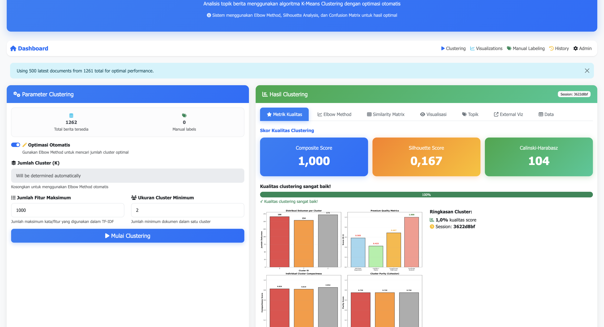
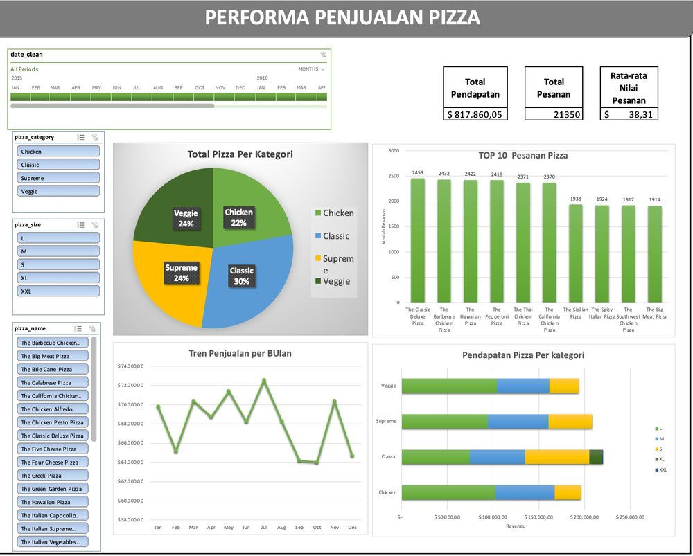
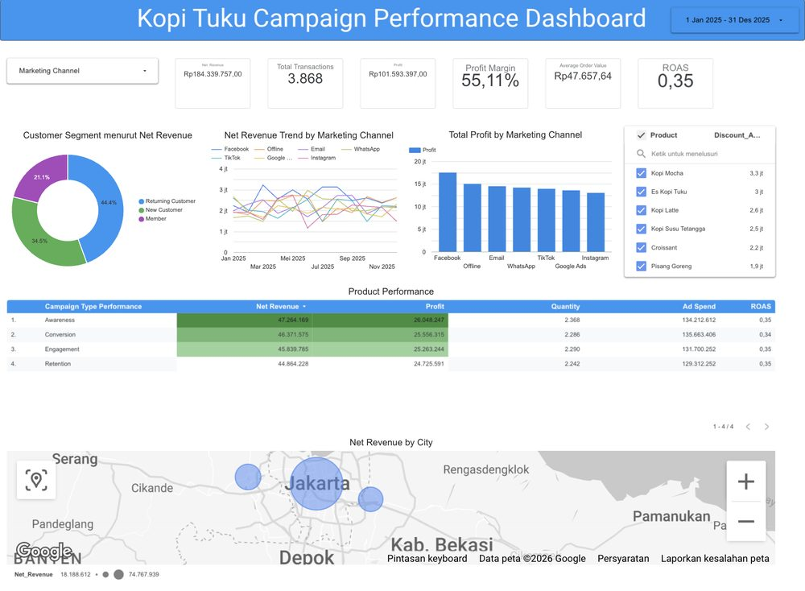
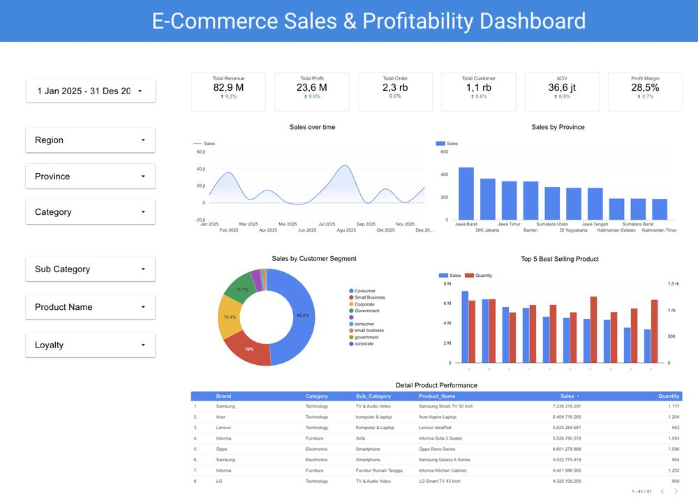
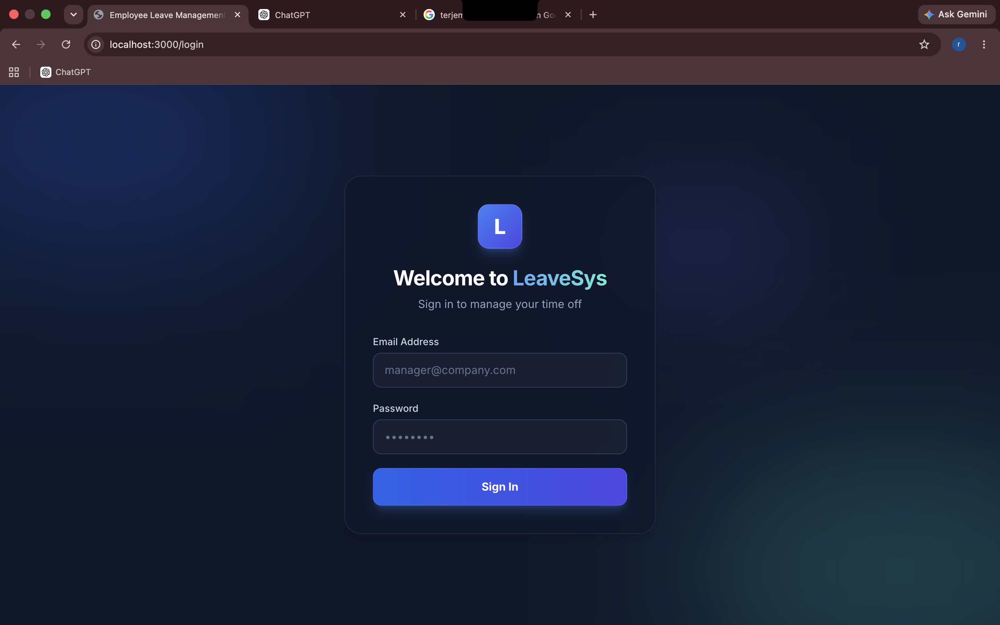

HTML + CSS
Experienced
Hello, I'm
Web Developer & Data Science

Get To Know More

Internship at
Ministry of Human Rights

B.Sc. Informatics
Universitas Nasional
GPA: 3.73/4.00
Recent bachelor's degree graduate in Informatics from Universitas Nasional with a strong foundation in Web Development, Artificial Intelligence, and Machine Learning. Completed a 6-month internship at the Ministry of Human Rights (KemenHAM), contributing to the development of web-based systems using Django, React.js, and JavaScript. Developed independent full-stack web development projects to strengthen practical skills including frontend and backend development, RESTful APIs, database management, authentication, and system integration. Certified in Software Development and as a BNSP Junior Web Developer.
Explore My
Experienced
Experienced
Intermediate
Intermediate
Intermediate
Experienced
Experienced
Intermediate
Intermediate
Intermediate
Intermediate
Intermediate
Intermediate
Experienced
Experienced
Intermediate
Experienced
Browse My Recent

Proyek pemodelan topik dan klasterisasi artikel berita seputar KEMENHAM menggunakan pendekatan Natural Language Processing untuk mengelompokkan berita ke dalam klaster berdasarkan kemiripan topik, membantu meringkas pola pemberitaan dalam jumlah artikel yang besar. Dibangun sebagai dashboard interaktif berbasis Django dengan fitur konfigurasi parameter clustering, evaluasi kualitas (Elbow Method, Silhouette Score, Similarity Matrix), visualisasi cluster, serta modul manual labeling untuk validasi hasil.

Dashboard performa penjualan pizza untuk melacak tren pesanan bulanan, kategori produk terlaris, dan kontribusi pendapatan per ukuran dan kategori pizza, digunakan untuk mendukung keputusan operasional dan menu.

Analisis performa campaign marketing Kopi Tuku sepanjang Januari–Desember 2025, mencakup proses data cleaning, exploratory data analysis, perhitungan KPI bisnis, hingga pembuatan dashboard interaktif untuk mengevaluasi efektivitas channel marketing dan ROAS.

Dashboard business intelligence interaktif untuk menganalisis performa penjualan, profitabilitas, segmen pelanggan, produk, dan performa regional sebuah e-commerce sepanjang periode Januari–Desember 2025. Data disiapkan dan dibersihkan di Excel, kemudian divisualisasikan secara interaktif di Google Looker Studio.

Banyak perusahaan berskala menengah masih mengandalkan cara manual (kertas, email, atau spreadsheet) untuk melacak sisa cuti dan proses persetujuan cuti karyawan. Hal ini sering menimbulkan masalah seperti:
Untuk menyelesaikan masalah tersebut, saya merancang dan membangun sistem manajemen cuti berbasis web yang terotomatisasi secara end-to-end.

Bayangkan Anda menjalankan bisnis SaaS — setiap bulan ada pelanggan yang diam-diam pergi tanpa pernah bilang kenapa. Tim Customer Success baru sadar ketika pelanggan sudah cancel. Padahal, mencari pelanggan baru itu 5-7x lebih mahal dibanding mempertahankan yang sudah ada. Masalahnya sederhana: tidak ada cara untuk tahu siapa yang akan pergi sebelum mereka benar-benar pergi.
Untuk menjawab tantangan ini, saya membangun sebuah platform Machine Learning dari nol — bukan sekadar model di Jupyter Notebook, tapi sistem yang siap digunakan di dunia nyata. Platform ini bisa memprediksi peluang churn setiap pelanggan secara real-time, mengelompokkan mereka ke level risiko (HIGH / MEDIUM / LOW), lalu memberikan rekomendasi aksi yang spesifik — misalnya "hubungi pelanggan ini untuk review pembayaran" atau "tawarkan upgrade plan". Seluruh sistemnya saya rancang end-to-end: mulai dari pipeline data (5 sumber CSV → cleaning → 22 fitur baru), model XGBoost yang sudah di-tuning, REST API via FastAPI, dashboard Streamlit untuk tim non-teknis, database logging untuk audit trail, hingga Docker untuk deployment.
docker compose up dan selesai.1 / 1
Get in Touch